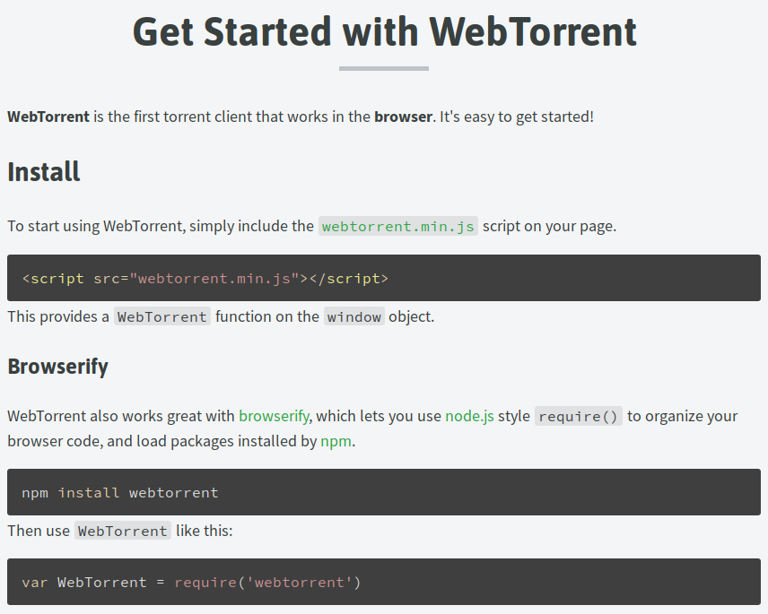
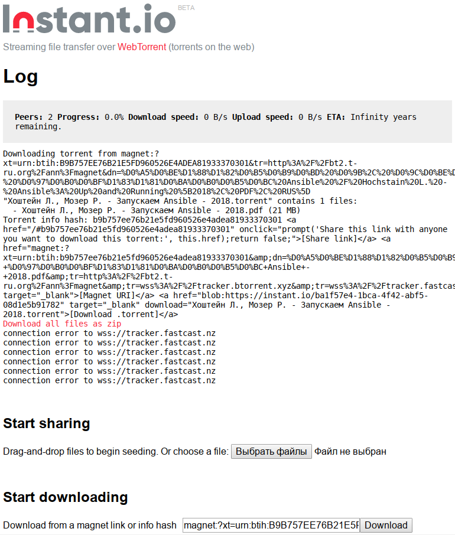
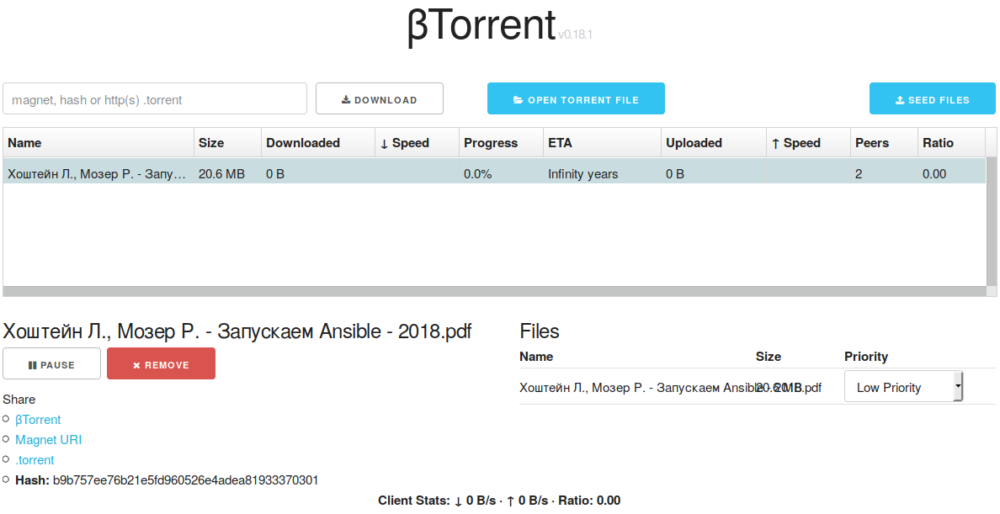
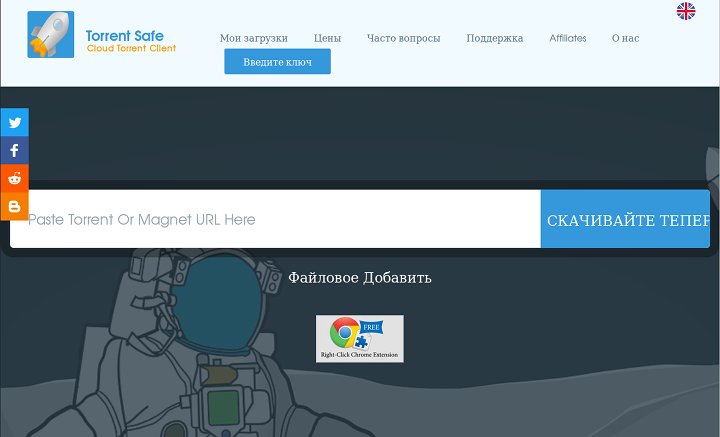
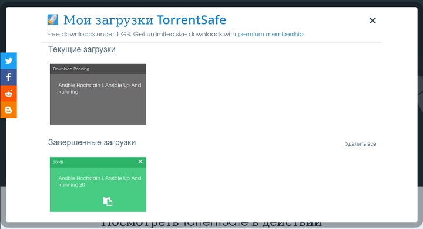

Иногда нужно скачать небольшой файл, находясь в корпоративной сети, где торренты не работают. Или другая ситуация: на рабочем компьютере заблокирована установка программ, а скачать файл с торрента все-таки надо. Что делать в этих случаях?
Можно попробовать воспользоваться онлайн-сервисами для скачивания торрент-файлов. К сожалению, все эти сервисы находятся в полуразломанном состоянии, и по факту, практически не работают.
Здесь собрана информация о нескольких сервисах на 2020 год. Работает только один, и то, надо знать КАК получить из него файл.
Сервис webtorrent.io
Позиционирует себя как сервис, на котором можно скачивать торренты онлайн. По факту, нигде нет формы ввода magnet-ссылки или открытия torrent-файла. Вместо этого, сайт предлагает скачать некий файл webtorrent.min.js, создать для него HTML-страницу, прописать его туда в качестве JS скрипта, вызывать объекты классов, предоставляемых этой библиотекой. Почему нельзя было сделать готовую страницу онлайн - загадка природы.

Сервис instant.io
Похоже, что это и есть страница, на которой используется код от webtorrent.io. Разломанный и тормозной сервис. Он даже пытается скачать файл по magnet-ссылке (может и по torrent-файлу). Делает он это медленно, из-за чего непонятно, происходит ли вообще что-нибудь. После указания файла, нужно ждать несколько минут, и в блоке Log станут видны какие-то действия.

Проблема в том, что данный сервис пытается использовать сеть доставки tracker.fastcast.nz по протоколу wss, а серверов этой сети уже не существует в природе. То есть, получить файл из этого сервиса не удасться. Говорят, что пару лет назад этот сервис был рабочим, и им реально пользовались знающие люди.
Сервис btorrent.xyz
Сервис с нормальным, понятным интерфейсом. Без оплаты и регистрации. Одно плохо: он просто не качает торренты.

Обидно, ведь этот сервис мог стать мастхевом среди всего зоопарка.
Сервис torrentsafe.com
Единственный работающий сервис. Жуткий интерфейс, увидев который даже не подумаешь, что эта хрень может работать.

Для закачки по магнитной ссылке, надо вставить ее в гигантское поле ввода и нажать на кнопку "СКАЧИВАЙТЕ ТЕПЕР". Для закачки с помощью торрент-файла, надо нажать надпись "Файловое Добавить".
Чтобы контролировать закачку, надо нажать в заголовке пункт горизонтального меню "Мои загрузки". Пока файл скачивается, в открышемся окне будет виден голубенький прямоугольник с процентами загрузки, которые стоят всегда на нуле. Но в конце концов, если загрузка будет успешной, голубенький прямоугольник превратится в серенький, и появится раздел "Завершенные загрузки" с зелененьким прямоугольником:

Но получить файл скачанного торрента просто так не получится. Нажатие на зелененький прямоугольник ни к чему не приводят. Нажатие на иконку внутри зеленого прямоугольника тоже ничего не дает. Что же делать?
Оказывается, при нажатии на иконку внутри зеленого прямоугольника, в буфер обмена помещается ссылка на файл. Проблема в том, что эта ссылка ведет на HTTPS-сервер с невалидным SSL-сертификатом:
Подключение к s19.torrentsafe.com (s19.torrentsafe.com)|62.210.88.119|:443...
соединение установлено.
ОШИБКА: Нет доверия сертификату для «s19.torrentsafe.com».
ОШИБКА: Сертификат «s19.torrentsafe.com» неизвестно кем выпущен.
Поэтому для скачивания файла нужно воспользоваться браузером, который не блокирует подключение к серверам с некорректными SSL-сертификатами.
И вот, после таких приключений, нужный файлик наконец-то можно получить на свой компьютер.